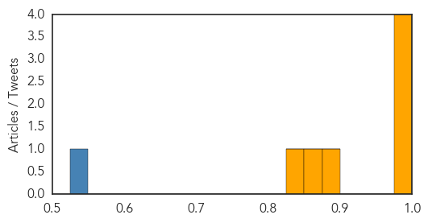

Cholera
30-Day Web Trend
1 alerts, 1 warnings
30-Day Twitter Trend
1 alerts, 0 warnings

Article Locations
Article Confidences
Top Articles:
- 0.999
- Further review of Cholera outbreak investigation in Haiti
- 0.999
- WHO continues to support the cholera outbreak response in Iraq as cases decline
- 0.999
- United Republic of Tanzania: Cholera outbreak 2015 Situation Report No. 2 (as of 20th November 2015) - United Republic of Tanzania
- 0.976
- Combating Cholera Outbreaks in Iraq
- 0.889
- UNICEF Iraq Monthly Humanitarian Situation Report, 1 - 31 October 2015 - Iraq
- 0.870
- Why Cholera outbreaks are prevalent among Lake Albert fishermen
- 0.849
- News in Brief 23 November 2015 (AM)
Top Tweets:
- 0.562
- RT: PIH's: Eliminating cholera requires investment in vaccines, health care systems, and sanitation: https://t.co/4Iij…
- 0.562
- RT: PIH's: Eliminating cholera requires investment in vaccines, health care systems, and sanitation: https://t.co/4Iij…
- 0.550
- RT: .@drlouiseivers on the difficulties of treating cholera in Haiti https://t.co/AU404v6IAi via
Meningitis
30-Day Web Trend
3 alerts, 0 warnings
30-Day Twitter Trend
1 alerts, 0 warnings
Article Locations

Article Confidences

Top Articles:
-
No articles found for Nov 23, 2015
Top Tweets:
-
No tweets found for Nov 23, 2015